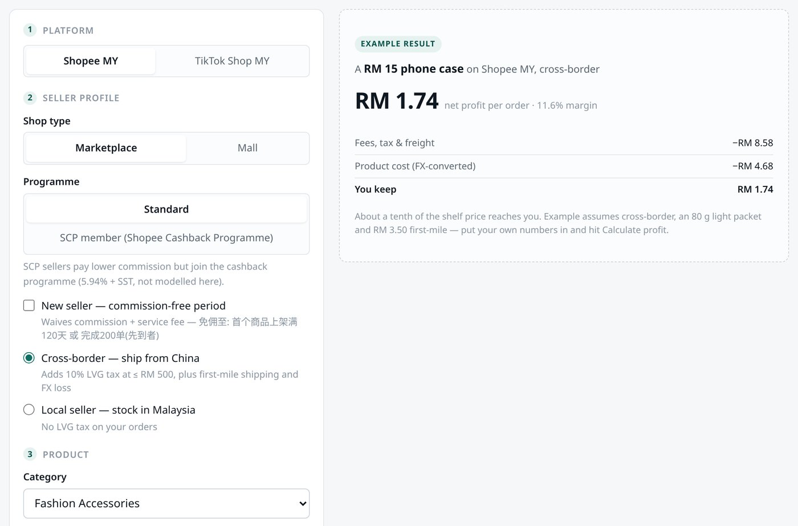

每天有人在复制粘贴
订单、报表、表格之间来回倒数据，枯燥、费时，还容易出错。
给有真实业务、没有 AI 团队的老板和小团队
我用 AI 把复杂工作变成可运行的流程和系统。不卖课，不做一次性演示：先测 AI 会在哪里失败，再把确定性代码、模型生成和人工判断分开，留下可追溯的证据，关键一步由人拍板。
你可能正在经历PROBLEMS
订单、报表、表格之间来回倒数据，枯燥、费时，还容易出错。
产品、价格、流程散落在聊天记录里，新人问三遍还是找不到答案。
数据要人手汇总，等老板看到已是几天前的事，看完也不知道该先动哪里。
短视频、公众号想做，选题靠灵感、脚本临时写，做两周就停了。
演示时很惊艳，一放进真实业务就会“安静地出错”——算错一个数、编一句话，没人发现。
定制软件太重、SaaS 对不上自己的流程，身边也没有懂技术的人帮着判断。
能接进哪些流程SCENARIOS
以下是示例场景，描述典型做法和流程变化，不代表某个具体客户的结果。每个场景都写了“怎么分层”，以及我在自己项目里跑过的同类做法。
适合：门店、餐饮、零售、电商——每天都有销售数据，但没人有空细看。
现在通常是
接入 AI 员工后
怎么分层
适合：需要持续获客的实体店、品牌、本地服务商。
现在通常是
接入 AI 员工后
怎么分层
适合：咨询量大、产品 / 规则多、新人上手慢的团队。
现在通常是
接入 AI 员工后
怎么分层
适合：每天要在几个系统之间录单、改状态、对账的岗位。
现在通常是
接入 AI 员工后
怎么分层
适合：选址、选品、找供应商、看竞品、评估新市场或合作方。
现在通常是
接入 AI 员工后
怎么分层
我的方法FRAMEWORK
这四步是我每个项目的固定动作，也是我判断 AI 能不能进入真实业务的分水岭。不是从模型开始，而是从“它会在哪里出错”开始。
拿到任何模型，先不问“它能干什么”，先问“它在哪里必然崩”。成功样例无法复用，失败边界才能。
试跑前先用你的真实样本测失败率和耗时，再定方案。
必须准确的一半交给确定性代码，可以生成的一半交给模型。标准很简单：错了会不会有人受损。
价格、库存、财务数字不交给模型自由发挥，模型只负责“说人话”。
每条 AI 产出都带来源、时间、置信度、成本，缺一件不进生产。AI 系统的问题不在会犯错，而在会安静地犯错。
每一步留记录，出了问题能追到是哪一步、用了哪份资料。
留一个人工确认的关口，并让系统可完全卸载。全自动的系统做错事不告诉你；拆不掉的系统，你再也不敢动它。
对外发送、改价、付款默认由人确认；交付时写清怎么停用、怎么拆干净。
为什么是我FIELD NOTES
我是 Kevin。我自己就是一家一人公司：内容生产、产品交付、组织管理、市场验证四件事，由我和一套 AI 系统一起完成。
下面四个项目正好对应这四层。每个都标了真实状态——展示的不是 AI 能生成什么，而是它在真实业务里该承担哪一段工作。
玄象 Astralis · 东西方命理与心理测评交叉解读产品
人生留影计划 · 面向老年人的一对一生命回顾访谈影像服务

东南亚利润计算器 · 出海英文工具站（chuhai-niche D-2）
co-memory + 8 个职能 Agent · 一个人怎么同时管四条线
你拿到的，就是这同一套做法：先测边界，再分层，留痕，最后由人收口。
合作方式ENGAGEMENT
没有证据，就不承诺大项目。每一步单独确认、单独交付，你随时可以决定是否继续。
推荐起点
STEP 01 · 诊断
一次短诊断
搞清楚你的生意里，哪一段工作最适合交给 AI。
交付物：一页图——业务目标、候选 AI 环节、失败边界、人工关口、验证指标
从体检开始STEP 02 · 试跑
1–2 周
选一个高价值、低风险的环节，小范围跑出真实证据。
交付物：原型 + 验收记录——输入、输出、耗时、失败样例、下一步
咨询试跑STEP 03 · 接入
仅对已有试跑结果开放
把试跑结果接进真实流程，并让它能长期跑下去。
交付物：可运行系统 + 运行文档（含怎么停用）
了解接入我不做的：
✕ 培训课程✕ 一次性 Demo✕ 转卖 SaaS 账号✕ 承诺“全自动、全面替代人工”✕ 没有试跑证据就上大项目隐私与安全GUARDRAILS
AI 接进流程，最该担心的是数据和“安静地出错”。这几条在合作开始前写进方案。
常见问题FAQ
能。这正是我服务的对象。搭建、接入、维护由我负责；你的员工只需要在原来的表格、微信群或后台里使用。交接时会有操作文档和培训，日常小调整员工自己就能做。
这是我最在意的问题。所以必须算准的部分交给确定性代码，不交给模型；每条 AI 产出都带来源和置信度；对外发送、改价、付款这类动作默认由人确认。我不追求全自动——宁可留一个必须由人点头的关口。
账号密码和敏感数据不会进入 AI 的记忆或知识库；接入哪些资料、开放什么权限，都由你确认，并且随时可以收回。体检阶段会把数据怎么流动画清楚给你看。
体检结束你就能拿到一页图：哪一段最值得交给 AI、会在哪里失败、怎么验证。小试跑通常 1–2 周出原型和验收记录，效果用同口径的工时数据判断，而不是凭感觉。
SaaS 是让你去适应它的流程；我做的是让 AI 适应你已经在跑的流程。很多时候也会用到现成工具——我负责选型、做边界实测、把它们接起来，并且让它们在你的业务里真正跑下去。
合作按阶段走：体检、试跑、接入各自单独确认、单独交付。每个阶段结束你都可以决定是否继续，没有长期绑定。已交付的文档和系统归你使用，也写清了怎么停用。
昆明本地可以上门诊断和培训；其他城市以线上为主，必要时可以出差面谈。
下一步CONTACT
说说你的生意和最费人的那条流程。先聊 30 分钟：我会告诉你它适不适合交给 AI、可能会在哪里出错、大概怎么做；适合的话，再谈体检。